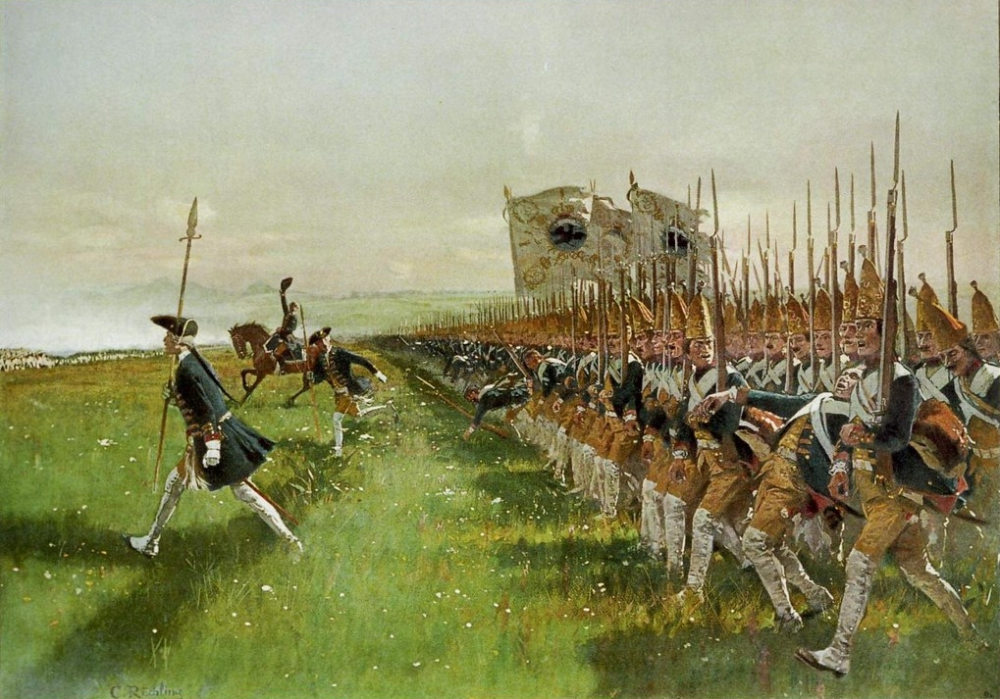
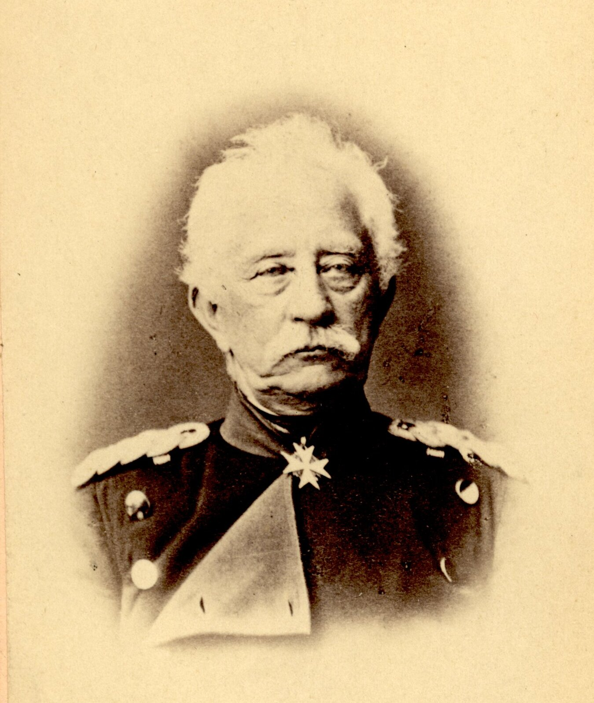
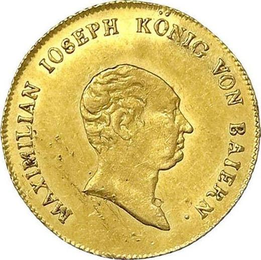
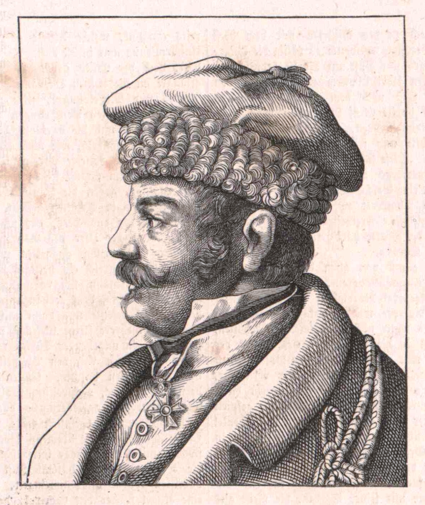
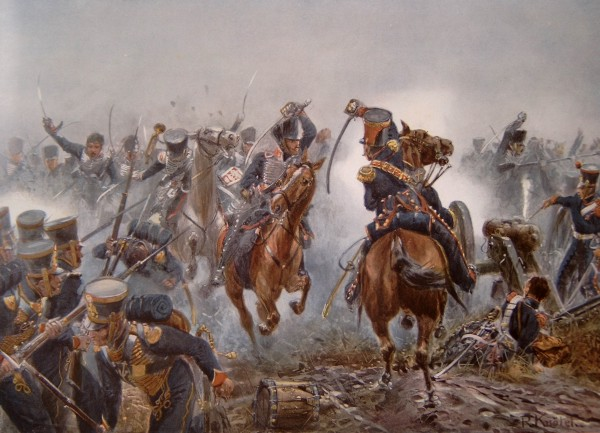
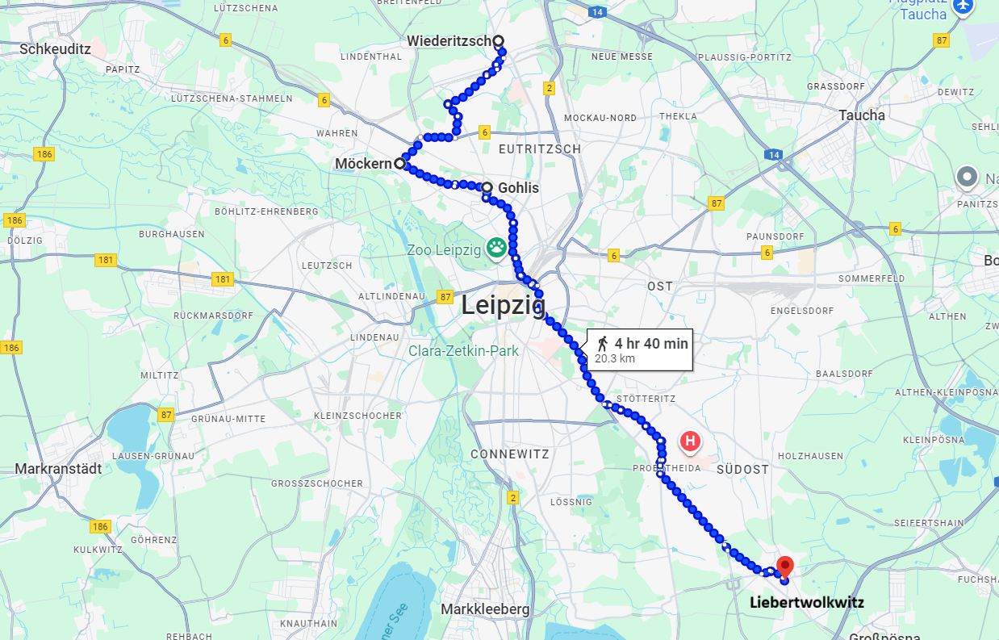

라이프치히 전투 (19) - 장고 끝에 악수를 두다
게시: 2025-09-29T06:30:14+09:00
슈타인메츠 여단이 뫼케른 마을의 그랑다르메 방어선 100미터 앞까지 접근했을 때, 여태까지 숨죽이고 있던 마르몽의 대포들은 무시무시한 캐니스터탄을 뿜어냈고, 보병들도 머스켓 일제 사격을 퍼부었습니다. 당시 보병 전열이 진격할 때 대개의 경우 장교들은 말을 타고 그 전열 옆에서 함께 진격했는데, 이때의 일제 사격은 너무나 치열하여 그 순간 말을 타고 있던 프로이센군 장교들은 대부분 낙마하여 쓰러졌다고 합니다.

(이 그림은 1745년 프로이센과 오스트리아-작센 연합군 사이에 벌어진 호헨프리드베르크(Hohenfriedberg) 전투에서의 프로이센 전열 보병의 전진 모습입니다. 장교는 말을 타고 있는데, 언제나 궁금한 것이 저러면 총이나 대포에 얻어맞기 딱 좋지 않은가 하는 점입니다. 실제로는 어차피 명중률이 형편없었으므로 말을 타나 걸으나 다 그게 그거였고, 덩치가 큰 말이 총이나 대포에 맞아 쓰러지는 일은 그 크기의 비율만큼 더 많았다고 합니다. 저 그림에서 전열 보병 맨 앞에 도보로 앞서 가는 사람은 장교가 아니라 부사관입니다. 병사들은 다 총을 들었는데 왜 사실상 쓸모도 없는 창을 쥐고 걷느냐 하면 저 창으로 찌르는 것은 멀리 있는 적군보다는 가까이 있는 아군 도망병이기 때문이겠지요. 실제로도 창이 더 가볍고, 손질할 필요가 더 적어서 부사관들은 총 대신 창을 소지하는 것에 대만족이었다고 합니다.) 이렇게 갑작스러운 일격을 받으면, 아무리 엄격한 군율에 훈련이 되어 있다고 하더라도 기계가 아닌 사람인 이상 진격을 멈추고 움찔하기 마련입니다. 그 일격에 살아남은 프로이센 병사들도 움찔하여 멈췄고, 앞으로 가기는 겁나고 뒤로 돌아 도망치기도 뭣했던 병사들은 그 자리에 서서 전방의 자욱한 화약연기 속으로 머스켓을 띄엄띄엄 쏘아대기 시작했습니다. 병사들의 이런 무의미한 사격을 중지시키고 다시 돌격을 시키기 위해 앞으로 뛰어가던 여단장 슈타인메츠도 이어진 그랑다르메의 사격에 중상을 입고 쓰러져 버렸습니다. 결국 프로이센 병사들은 막대한 피해만 입은 채 무너져 우르르 도망치기 시작했습니다.

(원래 요크 장군 휘하에는 슈타인메츠가 둘 있었습니다. 하나는 형으로서 여기서 쓰러진 여단장이고, 다른 하나는 훨씬 어린 동생으로 1813년 당시 불과 17살의 소년이었습니다. 형 슈타인메츠는 여기서 전사했고, 동생 슈타인메츠(Karl Friedrich von Steinmetz)도 이 전투에서 여러 차례 부상을 입었으나 결국 살아남아 프로이센군 원수 자리에도 올랐고 1870년 보불전쟁에도 참전하게 됩니다. 이 사진은 1870년 전후해서 촬영된 동생 슈타인메츠의 모습입니다.)

(1814년 부대와 함께 파리에 입성하기도 했는데, 주머니 사정이 넉넉한 동료들이 온갖 향락을 누리기 위해 여가 시간에 파리에 들어갈 때, 슈타인메츠는 동행을 거부했다고 합니다. 가난했던 슈타인메츠는 급여로 받던 10 두캇(ducat)을 모두 고향의 어머니에게 보내고 있었기 때문이었습니다. 참고로 당시 독일에서 발행되던 1 두캇의 금 함량은 3.49g이라서 10두캇이라고 하면 지금 가치로 대략 580만원 정도입니다. 이건 최근 국제 금값이 너무 많이 올라서 그런 것이고, 당시 구매력을 생각하면 대략 200~300만원 정도였을 것입니다. 사진은 1813년 주조된 바이에른 두캇으로서, 막시밀리안 1세의 초상이 들어가 있습니다.) 그때가 마르몽이 기다리던 순간이었습니다. 눈 앞에서 적군이 뒤돌아 도망칠 때 전과를 확대하는 가장 좋은 방법은 기병을 풀어 추격하는 것입니다. 마르몽은 즉각 바로 후방에 대기시켜놓았던 뷔르템베르크 기병여단에게 돌격을 명령하고, 보병들도 수세에서 벗어나 그 뒤를 추격하도록 했습니다. 그러나 뜻밖에도 뷔르템베르크 기병여단의 노르만(Karl Friedrich von Normann) 장군은 이런저런 핑계를 대며 돌격을 거부했습니다. 분노한 마르몽이 재차 전령을 보내 돌격을 명령했고, 이때는 노르만 장군도 궁시렁거리며 미적미적 돌격을 하긴 했습니다. 그러나 패주하던 프로이센군은 이미 전열을 수습한 뒤라서 효과는 거의 없었습니다. 뿐만 아니라 뷔르템베르크 기병여단은 엉뚱하게도 프로이센군을 추격하던 프랑스 제1해병사단에게 돌격을 감행하여 아군에게 대혼란을 야기했습니다. 뒤에서 보시겠습니다만, 이 짧은 순간 동안 지속된 혼란이 마르몽에게는 결정적인 패인이 되어 버렸습니다.

(뷔르템베르크 사람인 노르만 장군입니다. 전에도 언급했지만, 노르만은 불과 2일 뒤 연합군 편으로 부대 단위의 배신을 감행했는데, 놀랍게도 이건 뷔르템베르크 국왕 프리드리히 1세와도 전혀 상의가 없는 개인 독단적인 행동이었습니다. 덕분에 그는 나폴레옹 몰락 이후에도 뷔르템베르크로의 귀국이 허용되지 않았고, 국왕 프리드리히 1세가 1817년 사망한 후에야 귀국할 수 있었는데, 그러고도 여전히 뷔르템베르크의 수도인 슈투트가르트로 들어오는 것은 금지되었다고 합니다.) 이렇게 최후의 공격이 실패로 끝나자, 요크의 프로이센군도 더 이상 내놓을 것이 많지 않았습니다. 특히나 나빴던 것은 포병대였습니다. 마르몽의 포병대는 여전히 뫼케른 일대에서 치열하게 구형탄과 캐니스터탄을 날려보내며 전장을 휩쓸고 있었으나, 요크의 포병대는 이제 거의 침묵을 지키고 있었습니다. 그랑다르메는 뫼케른 마을의 창고와 주택 뒤에 숨어 있었기 때문이기도 했지만, 결정적으로 요크의 포병대는 이제 포탄과 화약이 거의 다 떨어진 상태였기 때문이었습니다. 기억하시겠습니다만, 10월 초 바르텐부르크 전투에서 엘베강을 건널 때 블뤼허의 탄약 수송대는 뒤쳐저 있었는데, 나폴레옹이 베를린으로 향한다는 소문을 들은 베르나도트가 자신과 함께 엘베강 북쪽으로 가자면서 그 수송대를 붙들고 있었던 것입니다. 이렇게 요크와 랑쥬롱이 압도적 수적 우세에도 불구하고 전과를 내지 못하고 있을 때, 총사령관인 블뤼허는 대체 뭘하고 있었을까요? 그에게는 아직 자켄과 생프리스트의 2개 군단이 남아있었습니다. 왜 이들을 즉각 투입하지 않았을까요? 이유는 역시나 바트 뒤벤에서 내려온다는 그랑다르메의 대규모 증원병력 때문이었습니다. 그에 대비하여 예비대를 쥐고 있어야 했던 것입니다. 더 이상 바트 뒤벤에서 내려오는 그랑다르메 증원군이 없다는 러시아 기병대의 정찰 보고가 블뤼허에게 들어온 것이 오후 5시경이었고, 이때서야 블뤼허는 자켄에게는 랑쥬롱을, 생프리스트에게는 요크를 지원하라는 명령을 내렸습니다만, 이 지원군은 너무 늦어서 전투에 별다른 영향을 주지는 못했습니다. 이 상황에서 요크에게 유일하게 남은 것이, 마르몽의 제6군단이 무너져 후퇴할 때를 대비하여 대기시켜 놓았던 기병대 뿐이었습니다. 이 상황에서 마르몽의 병사들이 뫼케른 마을에서 뛰어나와 빈격에 나서자, 요크로서도 이판사판의 순간이 되었습니다. 그는 평소처럼 명령서를 쓰고 그걸 전령을 통해 전달하도록 기다리지 못하고, 인근에 대기하고 있던 경기병대로 직접 말을 달려 그 지휘관인 소어(Sohr) 소령의 이름을 부르며 외쳤습니다. "소어 소령, 공격하라!" 그와 함께 이미 큰 피해를 입고 물러나 제2선에서 진열을 재정비 중이던 보병 대대들에게도 '닥치고 모두 돌격'을 명령했습니다.

(라이프치히 전투에서 소어 소령의 분전 모습입니다. 중앙에서 얼굴을 보이면서 왼손에 군도를 치켜든 사람이 소어 소령입니다. 그는 이때 돌격하다 오른팔에 머스켓 총탄을 맞았는데, 굴하지 않고 군도를 왼손으로 옮겨 쥐고 계속 돌격했다고 합니다.) 이렇게 뫼케른 마을 전방에서 양군이 대충돌을 일으킨 결과는 결국 프로이센측에게 유리하게 돌아갔습니다. 양군이 탁 트인 벌판에서 엉겨붙게되자, 그랑다르메 포병대도 더 이상 포탄을 난사하지 못했을 뿐만 아니라, 이렇게 난전이 되어버리자 아무래도 숫자가 더 많은 측이 유리했기 때문이었습니다. 아까 노르만의 뷔르템베르크 기병여단이 일으킨 소동이 아니었다면, 이런 일은 벌어지지 않았을 수도 있었겠지만, 결국 이 난전에의 승리자는 프로이센측이었습니다. 브란덴부르크 경기병대를 이끌던 소어 소령은 오른팔에 머스켓 소총탄을 맞았지만, 검을 왼손으로 옮겨 쥐고 돌격을 계속하여 그날 하루 프로이센군에게 극심한 피해를 입힌 그랑다르메 포병진지에 돌입하는데 성공했고, 그의 기병대는 6문의 대포를 노획했습니다. 그렇게 뫼케른에서의 마르몽의 질긴 방어전은 끝이 나버렸습니다. 마르몽은 총퇴각을 명령했고, 일부는 오이트리츠쉬로, 일부는 골리스(Gohlis)로 후퇴했습니다.

(마르몽이 퇴각했다고 하지만, 실은 뫼케른에서 골리스까지는 불과 2~3km의 거리로서, 저 남쪽의 주전투 현장인 리버트볼크비츠의 거리와 비교하면 크게 움직인 것도 아니었습니다.) 이러는 동안 해가 저물어 버렸기 때문에, 라이프치히 북쪽에서 벌어진 혈투는 마무리되었습니다. 이 뫼케른-비더릿쉬 전투에서 패배한 마르몽은 꽤 큰 피해를 입어 1만7천의 병력 중 6천~7천을 상실했습니다. 하지만 승리한 블뤼허의 피해는 더욱 커서, 거의 1만에 가까운 병력 손실을 입었습니다. 특히나 뫼케른을 공격했던 요크의 프로이센 제1군단의 피해가 커서 거의 8천에 가까운 사상자가 났던 것입니다. 하지만 비율로 따지면 마르몽은 거의 40%를 잃었고, 병력 수가 많았던 블뤼허는 고작 20%에도 미치지 못하는 피해를 입은 셈이었습니다. 그리고 가장 중요한 사실은, 마르몽이 여기서 블뤼허와 멱살을 쥐고 뒹구는 동안, 라이프치히 전투의 주전장이던 남쪽에서는 나폴레옹이 거의 다 손에 들어왔던 승리를 놓쳤다는 점이었습니다. 만약 마르몽의 제6군단이 원래 나폴레옹의 계획대로 그 순간 남쪽에 있었다면, 빅토르와 로리스통 등의 그랑다르메 군단들이 귈덴고사 언덕을 공격할 때 힘을 보탰을 것이고, 그랬다면 라이프치히 전투도 드레스덴 전투처럼 나폴레옹의 극적인 승리로 그 날 마무리 될 수도 있었습니다. 하지만 라이프치히 전투는 어느 쪽도 결정적인 승리를 거두지 못한 소모전으로 10월 16일을 마무리했습니다. 그리고 마르몽과 블뤼허의 경우에서 보았듯이, 양측이 소모전을 벌인다면 불리한 것은 나폴레옹 쪽이었습니다. Source : The Life of Napoleon Bonaparte, by William Milligan Sloane Napoleon and the Struggle for Germany, by Leggiere, Michael V With Napoleon's Guns by Colonel Jean-Nicolas-Auguste Noël https://www.britannica.com/event/Napoleonic-Wars/Dispositions-for-the-autumn-campaign https://www.historyofwar.org/articles/battles_leipzig_16_october.html https://warhistory.org/@msw/article/leipzig-battle-of-the-nations https://www.napolun.com/mirror/napoleonistyka.atspace.com/Leipzig_battle.htm https://en.wikipedia.org/wiki/Karl_Friedrich_von_Steinmetz https://coinstrail.com/catalog/bavaria/maximilian-i/gold-ducat/6447df5407a3760ee5e3971b